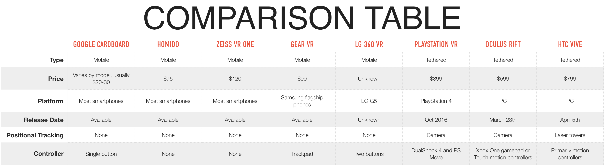

These fields of technology are still relatively new, but are now rapidly growing. One of the best know uses for both AR and VR is their implementation in the game field, but there are many other useful cases.
For example, some of the other uses for VR is the ability to use it for education, travel planning, and even some sports. Through the use of VR teachers can allow their students to experience places they would not normally be able to travel to, which can help students learn through interactive activities. Another case where VR was used was in the recent 2018 Olympics in PyeongChang, allowing viewers to have an immersive live VR experience and feel as though they were at the actual events.
One of the downsides of VR is that it can be expensive to get the nicer equipment that is required for most of the higher end games. However, with AR, the majority of the current applications can be experienced with a modern smartphone. One of the best known examples is the game "Pokemon Go" which uses the phones camera to place virtual creatures on the phones screen. However, there are also many interior design apps, and clothing apps that also use the camera to allow the user to see how something may look. In the usage case of a interior design app, it would allow the user to see how a certain piece of furniture may look in a part of their house.
